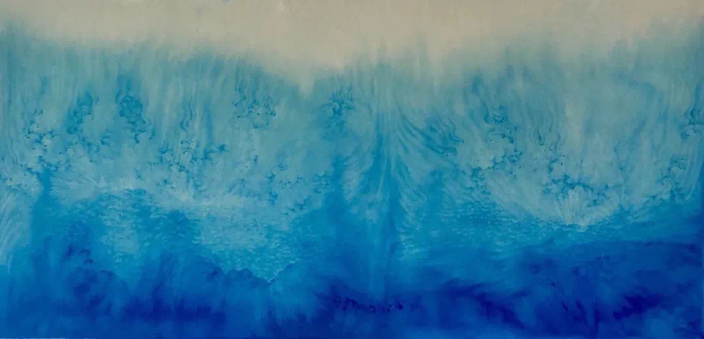

在水墨渲染中寻找内心的平静 | 黄威 「艺术访谈」
欢迎来到木牙Make Unique Young Arts，让我们来探索灵魂的深处～
在这马不停蹄，连知了都仿佛只叫了一个月就开始转凉的季节里，我们不知疲倦的让自己忙碌不停，等到内心烦躁不安需要休息时才开始盲目的寻找外物来催眠自我-这样的情况，我斗胆称之为“快餐式静态”。
却没人发现寻找安静的方法其实根本不需要外物，而是需要面对自我，向内深入，观心，寻找内心的方向。这其实是当下所有人都需要刻意去推动自己去做的事情。过于忙碌的生活，让我们没有了时间去真正的感受生活，感受周围的时间，从而放下纠结，抚平疲倦。
"观心"有个诀窍，就是我们当下需要把心中的念想孤立起来，称为闭关。而寻找内心深处的声音，隔绝外物这些听上去虚无缥缈的哲学思想，实际上给我们带来的是什么感受呢？
我们有幸邀请到了黄威来到木牙MUYA。洗去浮躁，脱去喧嚣。和大家一起观看他的画作。了解他与内心的对话以及“闭关”后心中对于自我，外物，时间，静的不同观感和理解。
黄 威
1985,生于内蒙古包头市; 2011,毕业于天津美术学院国画系获学士学位; 2014,毕业于西藏大学艺术学院获硕士学位; 现生活工作于北京T3国际艺术区
Huang Wei
1985,Born in Baotou, Inner Mongolia; 2011,Graduated from The Department of Chinese Painting of Tianjin Academy of Fine Arts with a bachelor's degree; 2014,I graduated from Art College of Xizang University with a master's degree; Now he lives and works in Beijing T3 International Art District.


黄威从天津美术学院毕业，不满足于程序化的教育模式，选择到西藏求学。西藏作为很多人的理想、神圣之地，也为很多艺术家提供了艺术灵感。但黄威关心的，并不是藏地民俗或景观，而是西藏特有的，信仰化的艺术表达。
After graduating from Tianjin Academy of Fine Arts, Huang Wei chose to study in Xizang because he was unsatisfied with the procedural education mode. As an ideal and sacred place for many people, Tibet has also provided artistic inspiration for many artists. Huang Wei is not concerned with Tibetan folk customs or landscapes, but with Tibetan unique, faith-based artistic expression.
在西藏的经历，是一种难得的“闭关”。他舍得花时间与自然对话，也与内心对话，通过绘画建立起一个内在的场域，让山、水、云成为心灵的对象。
The experience in Tibet was a rare retreat. He was willing to spend time in dialogue with nature as well as with his heart. Through painting, he established an inner field and objected to mountains, water and clouds with his mind.

黄威的笔触没有躁动之气。画面上丰富的肌理，来源于毛笔尖与宣纸的无数次点染。这种源自西藏传统绘画“唐卡”的技法，要求以极为安静的状态，无数次的重复，接近一种禅定的境界。这是来自西藏的古典精神，也和喜马拉雅地区大成就者们的精神追求一致。正如他的导师，中国重要的当代水墨画家李津所评论的：
“不管他画什么，哪怕只是一个水杯，也会联想到宗教，就好像有宗教的元神进入他的身体了。”
Huang Wei's brushwork does not move restlessly. The rich texture on the picture comes from the countless dots dyeing of the brush tip and rice paper. This technique, which originated from the Traditional Tibetan painting "Thangka", requires a state of extreme silence and numerous repetitions, approaching a state of meditation. This is the classical spirit from Tibet, and in keeping with the spiritual pursuits of the great achievers of the Himalayan region. As his mentor Li Jin, one of China's leading contemporary ink painters, commented:
"Whatever he paints, even a glass of water, is associated with religion, as if a religious metaconess had entered his body."
黄威不靠“聪明”来画，而是藉由“相信”。也借此，他开启了一个精神的内部景观。人和自然之间，一条心灵的道路。
Huang Wei does not draw by "smart", but by "believing". In doing so, he opens up a spiritual interior landscape. Between man and nature, there is a spirit of the road.

➤ 木牙MUYA:作为一个艺术家，您对于目前艺术商业化趋势有着怎样的看法？对于艺术市场的发展您是如何理解和消化这件事情的？
As an artist, what do you think of the current trend of art commercialization? How do you understand and digest the development of the art market?
Huang Wei:作为一个画画的人，艺术商业化对于我来说是很正常的事情，艺术产业链所必不可少的一个环节。可以把艺术从兴趣作为职业，已经是让人生充满幸福感了。艺术市场的发展需要艺术家长期合理的规划，但又不是艺术家自己主观可以把控的事情，艺术家还是要把心思放到艺术创作上面来。
As a painter, art commercialization is a very normal thing for me, which is an indispensable link in the art industry chain. You can take art as a career out of interest, which is already a life filled with happiness. The development of the art market requires long-term and reasonable planning by artists, but it is not something that can be controlled subjectively by artists themselves. Artists still need to put their mind to artistic creation.
➤ 木牙MUYA:由于发展过于快速，现在大部分人开始寻找“快餐式静态”。利用外物（通过购买书画艺术品）去塑造内心平静的假象，而不是由内而外的感悟心灵寻找内心的平静。通过作画净化自身的您，对于这样的现象是如何来对应对和理解的？
Due to the rapid development, most people are now looking for "fast food static". use the external of objects (through the purchase of paintings and calligraphy works of art) to create the illusion of inner peace, rather than from the inner feelings of the mind to find inner peace. Huang wei purify your own through painting , for such a phenomenon how do you deal and understand with this?
Huang Wei:我更加强调的是作画过程所带给自己的那份安宁，并且相信读者能够在我作品前得到这份安宁，这才是对我最大的安慰。“快餐式静态”这个词很好，艺术的功能也是千差万别，对于拥有者来说也是各有价值，我只能控制我的艺术品质，通过作品来使自己和读者内心平静，观心便是我艺术创作的核心价值，一定是由“心”出发的。
I put more emphasis on the peace that the process of painting brings to me, and I believe that the reader can get this peace from my work, which is the greatest comfort for me. "Fast food static" is a very good word, the function of art is also very different, for the owner is also valuable, I can only control my artistic quality, through the works to calm myself and the reader's mind, watching the heart is the core value of my artistic creation, it must be started from the "heart".
➤ 木牙MUYA:“以静制动，以不变应万变。” 是古代诗歌的一种写作手法。而在这里用来比喻画作则是另一种观感。在您的画作中，又是怎样看待将云，水和时间这样流动的动态元素融入或者转化到您的静态水墨画作中的呢？
"With static control dynamics, Challenge instabilities with consistency" It is a writing method of ancient Chinese poetry. The metaphor used here is another way of looking at it. In your paintings, how do you integrate or translate dynamic elements such as clouds, water and time into your static Chinese ink paintings?
Huang Wei:我的绘画作品是关于时间的一个述说和表达，一瞬间的动、静通过艺术作品来表达出来，即是一种永恒。也是对“心”的一种关照，在世界频繁变化的当下，传统的美学是否能在当代呈现地很恰当，是我一直在追问的一个问题。
My paintings are an illustration and expression of time. The movement and stillness of an instant are expressed through artistic works, which is a kind of eternity. It is also a kind of care for "heart". In the current world of frequent changes, whether traditional aesthetics can be presented properly in the contemporary era is a question I have been asking.
➤ 木牙MUYA:在您画作中如何巧妙将传统唐卡与当代水墨结合，不产生违和感？您能否说出它们的共通点与不同之处？
How to combine traditional Thangka with contemporary Chinese ink painting with a sense of harmony? Could you tell us what they have in common and how they differ?
Huang Wei: 传统唐卡和水墨的结合在我身上是自然而然的发酵过程，在天津美院国画系跟老先生系统学习了传统绘画技法。毕业后，去西藏大学读研，攻读汉藏美术比较学同时又跟唐卡画师系统学习绘制唐卡的方法，从理论上和技法上做了很多研究。在我的作品中，两者的结合跟我的这段人生经历是分不开的。
The combination of traditional Thangka and ink painting is a natural fermentation process for me, and I systematically learned the traditional painting techniques from the professor in the Department of Traditional Chinese Painting of Tianjin Academy of Fine Arts. After graduation, I went to Xizang University to study the comparative study of Sino-Tibetan art and systematically learn the method of drawing Thangka from thangka painters. I have done a lot of research theoretically and technically. In my work, the combination of those two is inseparable from my life experience.
➤ 木牙MUYA:藏传佛教在您的创作的灵感来源和创作的核心文化中占据着很重要的地位。我们好奇在您通过水墨的风格再现这种文化的形象，作为画家或者说文化再现者的您在其中处于怎样的位置呢？是否有过因为自己主观意识过强，从而造成对于藏传佛教形象过度塑造的烦恼经历呢？
Tibetan Buddhism plays a very important role in the source of inspiration and the core culture of your creation. We are curious to know where you stand as a painter or cultural reproducer when you reproduce the image of this culture through the style of ink painting. Have you ever had trouble in shaping the image of Tibetan Buddhism because of your strong subjective consciousness?
Huang Wei:目前这个阶段可能对于宗绘画的兴趣大一点，藏传佛教也许只是开始的一个敲门砖吧。自古就有很多宗教绘画流传于世，那么发展到了我这里，在思考一种绘画以及形象上的可能性表达，通过云、水、山跟佛影的一个结合，似与不似之间。隐隐约约的幻影之中述说一种哲学境界。
At this stage, I may be more interested in Buddhism, and Tibetan Buddhism may be just a key for the beginning. Since ancient times, there have been many religious paintings handed down in the world, so here I am thinking about a possible expression of painting and image, through a combination of cloud, water, mountain and Buddha's shadow, between likeness and unlikeness. A philosophical realm in a dim vision.
➤ 木牙MUYA:在西藏的“闭关”对于您的影响是巨大的。您认为在西藏攻读硕士学位对于自己最大的帮助是什么？与本科时期有什么不同之处？
The "seclusion" in Tibet has a great impact on you. What do you think is the most helpful for you to study for a master's degree in Xizang? What's the difference with your undergraduate years?
Huang Wei:“闭关”对于每一个修行人的生涯中，肯定会在各个阶段都会有的，恰巧那个阶段的修行是我选择了西藏或者西藏选择了我，都是冥冥之中的安排。最大的帮助就是让我跳出某些固有的思维模式，站在另一个角度思考，特别是本科时期的学院意识被打开很多。
For each practitioner, "seclusion" is bound to occur at every stage of his or her life. It happened that I chose Tibet or Tibet chose me for the practice at that stage, both of which were arranged in an invisible way. The biggest help is to break out of some fixed thinking mode and think with different angles. Especially, the college consciousness in my undergraduate years has opened up a lot.
➤ 木牙MUYA:作画方式有许多种，为何您会选择水墨的方式进行您的艺术创作？除了受中国传统文化，宗教上的影响，是否有着其他特殊的原因呢？
There are many ways of painting. Why do you choose Chinese ink painting for your artistic creation? Besides the influence of traditional Chinese culture and religion, is there any other special reason?
Huang Wei:我想可能是骨子里对于“纸”的一种钟情吧！造纸的发明是伟大的，那么我们在伟大事物上再创造些有价值的艺术，那岂不是更加伟大嘛。
I think it may be a love of "paper" in my heart! The invention of papermaking was great, but it would be even greater if we could recreate valuable art on great things.
➤ 木牙MUYA:除了作为水墨画家之外，您还有从事过哪些类型的工作？这些工作是否对于您的作品或者心灵产生过不同层面上的影响？您又是如何进行消化和理解的呢？可以和我们分享一下您近期的生活吗？
In addition to being an Chinese ink painter, what other types of work have you done? Has any of this work affected your work or your soul on different levels? How do you digest and understand? Could you share with us what are you working on recently?
Huang Wei:除了画画还偶尔还教授一些绘画课程，当然有一些灵感上的影响。艺术家还是多一点生活上的历练吧。近期受疫情影响，近期主要还是在屋子里进行创作和思考，感受绘画带我的乐趣。
In addition to painting, I also teach some painting lessons occasionally. Of course, there are some inspirations. Artists should learn more about life. Recently, affected by the epidemic, I was mainly engaged in creation and thinking in the room, and felt the pleasure of painting.
Which inspire your works most:
“无量无边，不可思议”
木牙微信订阅号